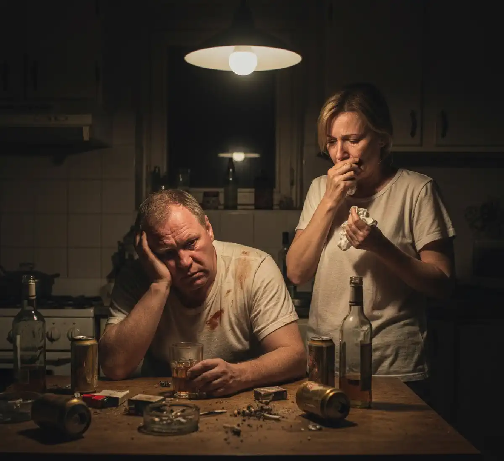

+38(068)
79 72 782
+38(068)
79 72 782Муж алкоголик — что делать?
Начни действовать — спаси себя и близких


Бесплатная консультация, работаем круглосуточно 24/7
Начни действовать — спаси себя и близких

Дата написания: 17 нояб. 2025 г.
Последнее обновление: 17 нояб. 2025 г.
Алкогольная зависимость у мужа — это не просто семейная трудность, а серьёзная проблема, которая постепенно влияет на все сферы жизни: здоровье, отношения, финансы, эмоциональную атмосферу в доме и безопасность близких. Часто всё начинается с редкого употребления «для расслабления», но со временем алкоголь становится привычным способом снять стресс, уйти от ответственности или заглушить внутреннее напряжение. Женщина может долго надеяться, что ситуация изменится сама, муж «одумается» или начнёт пить меньше, но зависимость редко проходит без профессиональной помощи.
Если муж алкоголик, важно не обвинять себя и не пытаться справиться с проблемой только уговорами, слезами или контролем. Алкоголизм — это хроническое заболевание, при котором меняется поведение, мышление, работа нервной системы и способность человека критически оценивать своё состояние. Чем раньше семья обращается за помощью, тем выше вероятность остановить развитие зависимости, избежать тяжёлых последствий и вернуть мужчине шанс на трезвую жизнь.
Понять, что муж стал алкоголиком, можно не только по количеству выпитого, но и по изменению отношения к алкоголю. Если спиртное становится обязательной частью отдыха, общения, выходных или вечеров после работы, это уже тревожный сигнал. Муж может говорить, что «контролирует ситуацию», но при этом регулярно превышать дозу, пить чаще, чем планировал, и раздражаться, когда близкие поднимают тему алкоголя.
Со временем появляются характерные изменения: человек начинает искать поводы выпить, скрывать количество употреблённого, отрицать проблему, обещать остановиться, но снова возвращаться к спиртному. Алкоголь постепенно вытесняет прежние интересы, ухудшает отношения в семье и снижает ответственность за свои поступки. В таких случаях важно не ждать, пока ситуация станет критической, а рассмотреть профессиональное лечение алкоголизма в Одессе или другом городе, где доступна квалифицированная наркологическая помощь.
Первые признаки алкогольной зависимости часто выглядят неочевидно. Муж может продолжать ходить на работу, выполнять часть обязанностей и внешне казаться «обычным человеком», но при этом алкоголь уже начинает занимать центральное место в его жизни. Сначала это может быть регулярное употребление по вечерам, затем — желание выпить в одиночестве, а позже — невозможность расслабиться или уснуть без спиртного.
К ранним признакам зависимости относятся раздражительность в трезвом состоянии, ухудшение сна, утренняя слабость, снижение концентрации, потеря интереса к семье и прежним занятиям. Муж может становиться более замкнутым, вспыльчивым, избегать разговоров о выпивке или обвинять близких в «преувеличении проблемы». Чем раньше эти признаки будут замечены, тем проще начать лечение и предотвратить переход зависимости в более тяжёлую стадию.
Причины злоупотребления алкоголем могут быть разными. У одних мужчин зависимость развивается на фоне хронического стресса, профессионального выгорания, финансовых трудностей или проблем в отношениях. У других — из-за тревожности, депрессивного состояния, внутренней неудовлетворённости или отсутствия навыков справляться с эмоциями без алкоголя. Сначала спиртное кажется способом расслабиться, но постепенно становится привычной реакцией на любые трудности.
Важную роль также играет окружение. Если среди друзей, коллег или родственников регулярное употребление считается нормой, человек быстрее втягивается в алкогольный образ жизни. Наследственная предрасположенность, психологические травмы, низкая стрессоустойчивость и длительное эмоциональное напряжение тоже повышают риск зависимости. Важно понимать: алкоголизм — это не «плохой характер», а заболевание, которое требует комплексного подхода и профессионального лечения.
Если муж пьёт каждый день, это уже серьёзный повод для беспокойства. Даже если он употребляет «понемногу», ежедневное употребление формирует устойчивую привычку и постепенно усиливает зависимость. Организм начинает адаптироваться к алкоголю, растёт толерантность, прежних доз становится недостаточно, а трезвые периоды вызывают раздражительность, тревожность или физический дискомфорт.
В такой ситуации важно не закрывать глаза на проблему и не оправдывать употребление усталостью, стрессом или «сложным периодом». Нужно спокойно оценить частоту и количество выпитого, наличие запоев, изменения поведения, ухудшение сна, агрессию, проблемы на работе и в семье. Следующий шаг — консультация нарколога. Специалист поможет определить стадию зависимости и подобрать безопасный план действий. Если ежедневное употребление уже перешло в длительный запой, может потребоваться вывод из запоя в Киеве с медицинским контролем и восстановлением организма.
Запой — это опасное состояние, при котором человек употребляет алкоголь несколько дней подряд и не может самостоятельно остановиться. В этот период организм находится под сильной токсической нагрузкой: страдает печень, сердце, сосуды, нервная система, нарушается сон, повышается риск скачков давления, судорог, психозов и других осложнений. Особенно опасны попытки резко прекратить употребление после длительного запоя без врача.
Если муж уходит в запой, важно не ждать, что он «сам отойдёт». Нужно оценить его состояние: есть ли сильная слабость, тремор, рвота, бессонница, паника, спутанность сознания, агрессия или жалобы на сердце. При ухудшении самочувствия необходимо вызвать специалиста. Нарколог проводит осмотр, оценивает риски и подбирает терапию. В таких случаях может потребоваться вывод из запоя в Харькове с капельницей , поддержкой сердца, нервной системы и восстановлением водно-солевого баланса.
Жене важно понимать: она может поддержать мужа, но не может выздороветь за него. Постоянный контроль, уговоры, слёзы, скандалы и попытки «спасти любой ценой» часто приводят к эмоциональному истощению самой женщины, но не решают проблему зависимости. Помощь должна быть спокойной, последовательной и направленной на лечение, а не на бесконечное прикрытие последствий пьянства.
Разговаривать с мужем лучше в трезвом состоянии. Важно говорить не обвинениями, а фактами: как алкоголь влияет на здоровье, семью, работу, финансы и отношения. Стоит обозначить границы: вы готовы помочь с лечением, поддержать обращение к врачу, быть рядом в процессе восстановления, но не готовы оправдывать пьянство, покрывать долги, терпеть агрессию или разрушительное поведение. Такая позиция помогает не усугублять созависимость и постепенно подводит мужчину к необходимости лечения.
Если муж зависим от алкоголя, нельзя лечить его тайно, подмешивать препараты в еду или напитки, давать лекарства без назначения врача. Это может быть опасно для здоровья, особенно если человек продолжает употреблять спиртное или имеет заболевания сердца, печени, почек, нервной системы. Любое медикаментозное лечение должно проводиться только после осмотра специалиста.
Также не стоит постоянно оправдывать мужа перед родственниками, работодателем или друзьями, закрывать его долги, скрывать последствия запоев и брать всю ответственность на себя. Такое поведение часто только поддерживает зависимость, потому что мужчина не сталкивается с реальными последствиями употребления. Нельзя устраивать серьёзные разговоры в состоянии опьянения — чаще всего это приводит к конфликту, агрессии или новым обещаниям без результата. Гораздо эффективнее действовать спокойно, обращаться к специалистам и выстраивать чёткие личные границы.
Разговор о лечении алкоголизма должен проходить в спокойной обстановке, когда муж трезв и способен воспринимать информацию. Не стоит начинать с обвинений, угроз или фраз вроде «ты разрушил всю жизнь». Лучше говорить о конкретных фактах: запоях, ухудшении здоровья, конфликтах, финансовых потерях, изменении поведения, страхе за будущее семьи. Важно показать, что речь идёт не о наказании, а о помощи.
Хорошо работает предложение конкретного решения. Не просто «бросай пить», а «давай проконсультируемся с врачом», «можно начать с детоксикации», «есть анонимная помощь», «врач подскажет безопасный вариант». Если мужчина боится осуждения или огласки, нужно подчеркнуть конфиденциальность лечения. Например, можно заранее узнать, где доступно лечение алкоголизма в Днепре , чтобы предложить понятный и реальный вариант помощи без давления и хаотичных поисков в момент кризиса.
Уговоры и скандалы редко помогают при алкоголизме, потому что зависимость меняет мышление человека. Муж может искренне обещать бросить пить, но при появлении тяги снова возвращается к алкоголю. Он может отрицать проблему, преуменьшать количество выпитого, обвинять близких или убеждать, что «в любой момент остановится». Без лечения такие обещания часто повторяются по кругу.
Скандалы усиливают напряжение и могут становиться дополнительным поводом для употребления. Муж начинает пить «из-за нервов», «назло», «чтобы успокоиться» или «потому что дома всё равно ругаются». В итоге семья попадает в замкнутый круг: алкоголь — конфликт — обещания — новый срыв. Гораздо эффективнее не спорить бесконечно, а спокойно обозначать проблему, предлагать медицинскую помощь и не брать на себя ответственность за последствия употребления.
Мотивация к лечению формируется постепенно. Не каждый мужчина сразу признаёт зависимость и соглашается на помощь. Часто требуется несколько разговоров, спокойная позиция семьи и правильно подобранный момент. Важно говорить не только о вреде алкоголя, но и о том, что изменится после лечения: улучшится сон, самочувствие, отношения, работоспособность, появится больше контроля над жизнью.
Мужу важно понять, что нарколог — это не «наказание» и не повод для стыда, а врач, который помогает безопасно выйти из запоя, снять интоксикацию, уменьшить тягу и подобрать дальнейшее лечение. Если пациент боится стационара или огласки, можно рассмотреть наркологическую помощь на дому во Львове , где специалист приезжает к пациенту, проводит осмотр и помогает начать лечение в комфортных условиях. Такой формат часто снижает сопротивление и помогает сделать первый шаг.
Срочно вызывать нарколога нужно, если муж находится в длительном запое, не может остановиться, испытывает сильную слабость, тремор, бессонницу, тошноту, рвоту, скачки давления, учащённое сердцебиение, боль в груди, выраженную тревогу или панические состояния. Опасными признаками также являются спутанность сознания, галлюцинации, агрессия, судороги, потеря ориентации и резкое ухудшение общего состояния.
В таких ситуациях нельзя ждать, что состояние стабилизируется само. Длительный запой и тяжёлая абстиненция могут привести к опасным осложнениям. Наркологическая помощь позволяет безопасно провести детоксикацию, снизить токсическую нагрузку, поддержать работу сердца, печени, нервной системы и восстановить водно-солевой баланс. При выраженной интоксикации может быть актуальна срочная наркологическая помощь в Запорожье с выездом специалиста и индивидуальным подбором терапии.
Лечить мужа от алкоголизма без его согласия в большинстве случаев нельзя. Эффективное лечение требует участия самого пациента, его понимания проблемы и готовности соблюдать рекомендации врача. Тайное применение препаратов, кодирование без ведома человека или давление со стороны родственников не дают устойчивого результата и могут быть опасны.
Исключения возможны только в ситуациях, предусмотренных законом, когда человек представляет угрозу для себя или окружающих либо находится в тяжёлом состоянии, требующем экстренной медицинской помощи. В обычной ситуации задача семьи — не заставить силой, а повысить мотивацию, показать последствия зависимости и предложить реальную помощь. Если муж категорически отказывается от лечения, жене стоит обратиться за консультацией самостоятельно. Специалист подскажет, как правильно говорить, какие границы выстроить и как не поддерживать болезнь своим поведением.
Созависимость развивается тогда, когда жизнь жены полностью начинает вращаться вокруг алкоголизма мужа. Женщина постоянно контролирует, проверяет, спасает, оправдывает, терпит, пытается предотвратить очередной запой и берёт на себя ответственность за его поступки. Постепенно она теряет собственные силы, интересы, спокойствие и ощущение безопасности.
Признаками созависимости могут быть постоянная тревога, чувство вины, страх оставить мужа без контроля, бессонница, эмоциональное истощение, невозможность думать о себе и своих потребностях. Важно понимать: жена не виновата в алкоголизме мужа и не может полностью контролировать его выбор. Поддержка важна, но она не должна разрушать жизнь самой женщины. Психологическая помощь, работа с личными границами и поддержка близких помогают выйти из состояния постоянного спасательства и принимать более здоровые решения.
Одна из главных ошибок родственников — долго отрицать проблему и надеяться, что муж «сам всё поймёт». Чем дольше семья закрывает глаза на зависимость, тем сильнее она закрепляется. Вторая частая ошибка — угрозы без действий. Если жена постоянно говорит, что больше не будет терпеть, но каждый раз снова покрывает последствия запоя, зависимый перестаёт воспринимать эти слова серьёзно.
Также ошибкой является чрезмерный контроль: поиск бутылок, проверка телефона, допросы, постоянные обвинения. Это истощает близких, но не лечит зависимость. Нельзя брать на себя все последствия пьянства: платить долги, оправдывать прогулы, решать конфликты и делать вид, что ничего не происходит. Правильнее направить усилия на обращение к специалистам, мотивацию к лечению и выстраивание границ. При регулярных запоях можно рассмотреть вывод из запоя в Черкассах , чтобы безопасно снять острое состояние и перейти к дальнейшему лечению зависимости.
После лечения важно понимать, что трезвость требует поддержки и дальнейшей работы. Детоксикация, кодирование или консультация нарколога помогают остановить острое состояние, но для устойчивого результата нужно менять образ жизни, привычки, окружение и способы реагирования на стресс. Без этого риск срыва остаётся высоким, особенно в первые месяцы восстановления.
Профилактика срывов включает психологическую поддержку, отказ от алкогольного окружения, нормализацию сна, восстановление режима, физическую активность, работу с тревогой и семейными конфликтами. Близким важно поддерживать трезвость, но не превращать жизнь в постоянный контроль. Лучше поощрять честность, ответственность и своевременное обращение за помощью при первых признаках тяги.
Если муж снова начинает искать поводы выпить, становится раздражительным, скрытным, возвращается к старым компаниям или говорит, что «один раз можно», это тревожный сигнал. Чем раньше семья реагирует на риск срыва, тем выше шанс сохранить результат лечения и не допустить нового запоя. Профессиональная поддержка помогает удержать ремиссию, восстановить доверие в семье и постепенно вернуть спокойствие в дом.

Статья проверена экспертом
Могучев Станислав
Врач терапевт, ординатор
Возможно интересная статья:
Янтарная кислота, Бетаргин и Энтеросгель при алкогольной интоксикации

Да, мы строго соблюдаем полную конфиденциальность на всех этапах лечения. Информация о пациенте, диагнозе и прохождении терапии не передаётся третьим лицам. Обращение к нам не влечёт постановку на учёт. Вы можете быть уверены в безопасности и анонимности.
Программа лечения разрабатывается индивидуально после консультации со специалистом. Учитываются вид зависимости, её длительность, физическое и психологическое состояние пациента. Такой подход позволяет повысить эффективность терапии и снизить риск срыва. Мы не используем шаблонные решения.
Да, мы сопровождаем пациентов и после основного курса лечения. Проводятся консультации, рекомендации по адаптации и профилактике рецидивов. При необходимости возможна дальнейшая психологическая поддержка. Это помогает сохранить результат и вернуться к полноценной жизни.
Номер телефона:
+380 (68) 797 27 82
+380 (50) 021 69 57
Адрес наркологического центра вашего города уточняйте по
телефону
Работаем в: Киеве, Одессе, Львове, Харькове, Днепре,
Запорожье, Черкассах, Чугуеве, Черноморске, Каменском
Telegram: t.me/umbrellaplus
График работы: Круглосуточно